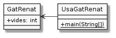

Exercici 04_04. Renat també des de fora¶
Exercici 04_04. Renat també des de fora¶
Context
Carpeta de lliurament:
04_04_desde_fora/Continguts relacionats: Classes i objectes
Com lliurar-lo: instruccions
Enunciat

Considera ara el següent codi que apareix a un altre fitxer:
1 2 3 4 5 6 | public class UsaGatRenat {
public static void main(String[] args) {
GatRenat renat = new GatRenat();
System.out.println("Al gat Renat li queden " + renat.vides + " vides");
}
}
|
Copia el codi en un fitxer al mateix directori que el de l’exercici anterior i executa’l.
Respon a les següents preguntes:
Quin és el nom del fitxer on està definit el punt d’entrada
main()d’aquest programa?Ara tenim dos fitxers amb
main(). Com pot saber Java quin és elmain()a executar?A quin fitxer està definida la classe del gat Renat?
Quants programes es podrien construir fent ús de la definició del gat Renat?
Què passaria si el fitxer amb el codi anterior i el que conté la definició de la classe del Renat estiguessin en directoris diferents?
Elimina el
main()deGatRenat. Continua funcionantUsaGatRenat? Què ha deixat de poder-se executar?